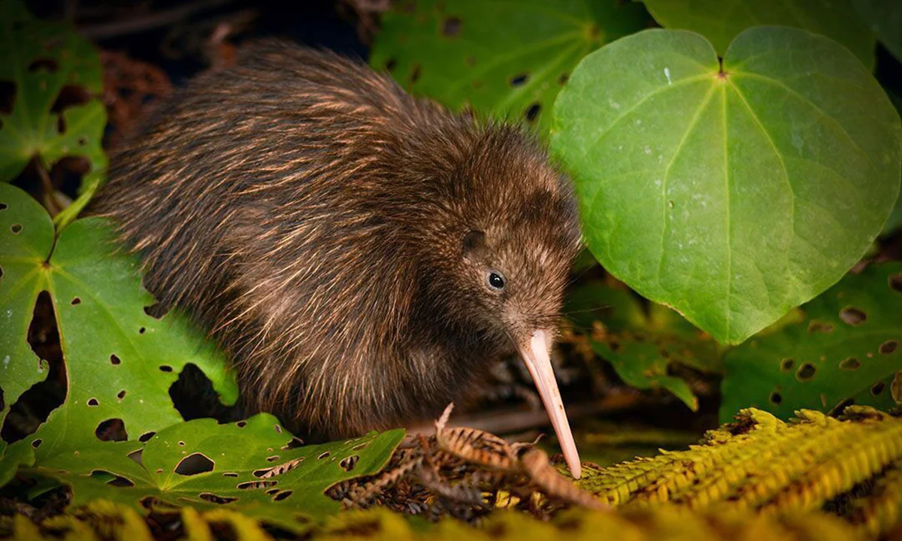
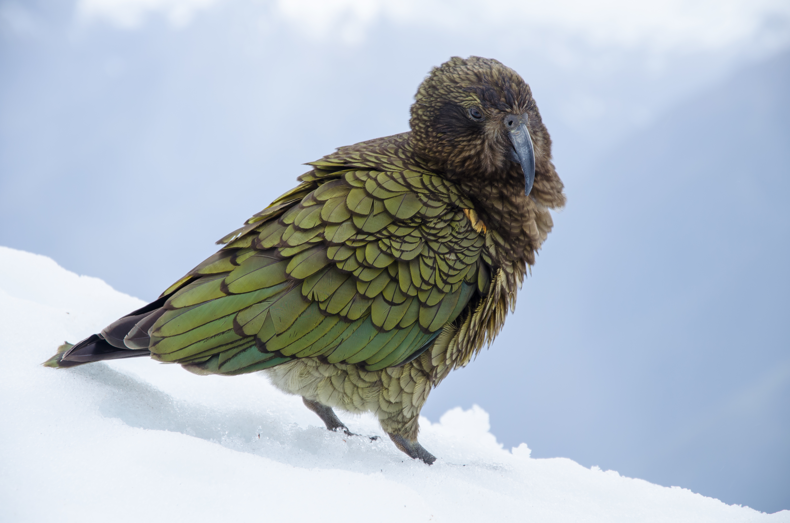

Native Species
This page is about New Zealand native animals

Tui
Known for their beautiful bird calls
The Tui is one of Aotearoa's most iconic native birds, easily recognized by its iridescent metallic feathers and the distinct white tuft under its throat. Found in forests and urban gardens across New Zealand, these unique birds are vital to our ecosystem as they act as key pollinators, feeding primarily on nectar from native plants like Harakeke and Kowhai. While they are known for their complex, melodic songs and playful behavior, Tui face constant threats from habitat loss and introduced predators like rats and stoats. Because these remarkable creatures are found nowhere else on Earth, protecting their environment is essential to ensuring that future generations of locals and tourists alike can continue to experience the magic of their song.

Kiwi
A nocturnal animal and wierd nature.
The kiwi is more than just a national icon; it is a biological marvel found nowhere else on Earth. These flightless, nocturnal birds primarily inhabit a range of environments across Aotearoa, from lush native forests and scrublands to rough farmlands. Unique for their pear-shaped bodies and long bills with nostrils at the tip, kiwi forage the forest floor for invertebrates like worms and cicadas, though they also enjoy fallen fruit. Because they are ground-dwellers with a distinct, often territorial behavioral pattern, they are highly vulnerable to introduced predators like stoats, ferrets, and uncontrolled dogs. Protecting the kiwi is a global priority because their extinction would mean losing a lineage that has existed for millions of years. By understanding their needs and the dangers they face, both locals and tourists can play a vital role in ensuring these "taonga" (treasures) survive for future generations to witness.

Hector dolphin
One of the smallest marine mammals
The Hector’s dolphin is one of the world’s smallest and rarest marine mammals, found exclusively in the shallow coastal waters of Aotearoa. Known for their distinct "Mickey Mouse" rounded dorsal fin and striking grey, black, and white markings, these social creatures are most commonly located around the South Island. They spend their time in small pods, following behavioral patterns that involve complex social play and foraging for small fish and squid in waters less than 100 meters deepBecause they live so close to the shore, the primary danger to Hector’s dolphins is human activity—specifically entanglement in set nets and trawl nets, as well as habitat degradation. Since they are found nowhere else on earth, their survival depends entirely on our local protection efforts. For tourists hoping to catch a glimpse or locals living along the coast, understanding these dolphins is the first step toward ensuring their safety. Every individual pod is a vital part of New Zealand’s natural heritage, making it essential that we advocate for marine sanctuaries and sustainable fishing practices to prevent their extinction.

Kakapo
only flightless parrot, famous for its nocturnal habits.
The kākāpō is a truly remarkable bird that captures the unique spirit of Aotearoa’s wildlife as the world’s only flightless and nocturnal parrot found nowhere else on earth. Historically spread across both main islands, they are now located primarily on strictly managed, predator-free offshore islands where they inhabit forest floors and subalpine scrub, using their strong legs to climb trees and an excellent sense of smell to forage. Their diet is strictly vegetarian, consisting of native fruits, seeds, and plants—most notably the fruit of the rimu tree which triggers their unusual "lek" breeding behavioral patterns. Because kākāpō evolved without land mammals, their primary defense is to freeze and blend into the foliage, a tactic that makes them extremely vulnerable to introduced dangers like cats, stoats, and rats. The primary mission of this website is to inform people that with only a small population remaining, these birds are national treasures that must be protected from extinction, whether you are an animal enthusiast seeking technical data or a tourist learning about our conservation efforts.

Tuatara
A reptile found nowhere else on earth, known for its "third eye"
The Tuatara is a true "living fossil" and a prehistoric treasure found only in Aotearoa. Though they resemble lizards, they belong to a distinct, ancient order of reptiles that flourished during the age of the dinosaurs. These remarkable creatures are primarily located on offshore islands where they are safe from introduced predators, living in burrows and feeding on a diet of insects, lizards, and seabird eggs. Tuatara are known for their incredibly slow metabolism and long lifespans, sometimes living for over 100 years. Because their populations are highly sensitive to climate change and invasive species like rats, they are a high priority for conservation. Protecting the Tuatara is vital to maintaining New Zealand’s biodiversity and preserving a direct link to the earth's ancient past.

Skink
Known for their scales and the way they camouflage
New Zealand is home to an incredible variety of native skinks, many of which are found nowhere else on earth. These small, agile reptiles occupy a range of habitats, from coastal rock piles to high-altitude alpine scree. Unlike most lizards worldwide, many of our native skinks give birth to live young rather than laying eggs. They are essential to the ecosystem as both predators of invertebrates and as a food source for native birds. Unfortunately, skink populations are under constant threat from habitat destruction and predators like cats, hedgehogs, and weasels. By educating locals and tourists on the importance of predator control and habitat restoration, we can help ensure these "mighty minis" of the reptile world continue to thrive in our unique landscape.